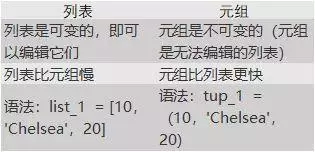

作者：我爱学python 链接：https://www.jianshu.com/p/6d9e126df239
如果你在寻找python工作，那你的面试可能会涉及Python相关的问题。
通过对网络资料的收集整理，本文列出了100道python的面试题以及答案，你可以根据需求阅读测试。
python基础
Q1.什么是Python？
Python是一种面向对象的，交互式的，解释型的计算机程序设计语言。Python的设计具有高可读性，它使用英语关键词而非标点符号，语法结构也比其他语言简单。
Q2.Python的主要功能是什么？
1）python是一种解释型语言，因此在使用python时不需要进行编译
2）声明变量和类似变量时，不需要重复声明变量的类型；
3）Python非常适合面向对象的编程，因为它允许类的定义以及组合和继承；
4）函数是第一类对象，这意味着它们可以分配给变量，从其他函数返回并传递给函数，类也是第一类对象；
5）用于许多领域，包括Web应用程序，自动化，科学建模，大数据应用程序等等。
Q3.Python中支持的数据类型有哪些？
Python支持5种数据类型：
1）Numbers（数字）——用于保存数值；
a=7.0
2）Strings（字符串）——字符串是一个字符序列，我们用单引号或双引号来声明字符串；
title="Data123"
3）Lists（列表）——列表就是一些值的有序集合，我们用方括号声明列表；
colors=['red','green','blue']
type(colors)
4）tuples（元组）——元组和列表一样，也是一些值的有序集合，区别是元组是不可变的，意味着我们无法改变元组内的值。
(1,2,3,abc)
5）Dictionary（字典）——字典(dictionary)是除列表以外Python之中最灵活的内置数据结构类型。
列表是有序的对象结合，字典是无序的对象集合。
两者之间的区别在于：字典当中的元素是通过键来存取的，而不是通过偏移存取。
字典用"{ }"标识。字典由索引(key)和它对应的值value组成。
dict = {}
dict['one'] = 'This is one'
dict[2] = 'This is two'
tinydict = {'name':'john','code':5762,'dept':'sales'}
print(dict['one']) #输出键为'one'的值
print(dict[2]) #输出键为2的值
print(tinydict) #输出完整的字典
print(tinydict.keys()) #输出所有键
print(tinydict.values()) #输出所有值
Q4.列表和元组有什么区别？

Q5.什么是Python模块？
模块是一个Python脚本，通常包含import语句，函数，类和变量定义，以及Python可运行代码，文件的扩展名为“.py”。
Q6.python解释器种类以及特点？
CPython：这个解释器是用C语言开发的，所以叫 CPython，在命名行下运行python，就是启动CPython解释器，CPython是使用最广的Python解释器；
IPython：IPython是基于CPython之上的一个交互式解释器，也就是说，IPython只是在交互方式上有所增强；
PyPy：PyPy是另一个Python解释器，它的目标是执行速度，PyPy采用JIT技术，对Python代进行动态编译，所以可以显著提高Python代码的执行速度；
Jython：Jython是运行在Java平台上的Python解释器，可以直接把Python代码编译成Java字节码执行。
IronPython：IronPython和Jython类似，只不过IronPython是运行在微软.Net平台上的Python解释器，可以直接把Python代码编译成.Net的字节码。
Q7.什么是Python切片？
Python中符合序列的有序序列都支持切片(slice)，如:列表,字符,元祖
Python中切片的格式：[start : end : step]
Start:起始索引,从0开始,-1表示结束；End:结束索引；Step:步长
end-start=正数时,从左向右取值,=负数时反向取值
注意:切片结果不包含结束索引,即不包含最后一位,-1代表最后一个位置索引
str1 = 'abcdefghijklmnopqrstuvwxyz'
str1[2:6]
'cdef'
Q8.Python中的％S是什么？
Python支持将值格式化为字符串。虽然这可以包括非常复杂的表达式，但最基本的用法是将值插入到%s 占位符的字符串中 。
name = raw_input("who are you?")
print "hello %s" % (name,)
Q9.Python编程中的函数是什么？
函数是表示代码块并且是可重用实体的对象。
它为程序带来了模块化，并提供了更高程度的代码可重用性。
Python为我们提供了许多内置函数，例如print（）等，并提供了创建用户定义函数的能力。
Q10.Python中有多少基本类型的函数可用？
Python为我们提供了两种基本类型的函数：内置和用户定义。
内置函数是Python语言的一部分，比如print（），dir（），len（）和abs（）等。
Q11.我们如何用Python编写函数？
我们可以通过以下方式创建Python函数。
1）用def定义函数并链接功能名称；
2）传递参数并使用括号将它们括起来，使用冒号来表示结尾；
3）添加所需的Python语句以供执行。
Q12.深拷贝和浅拷贝有什么区别？
深拷贝就是将一个对象拷贝到另一个对象中，这意味着如果你对一个对象的拷贝做出改变时，不会影响原对象。
在Python中，我们使用函数deepcopy()执行深拷贝，导入模块copy，如下所示：
import copy
b=copy.deepcopy(a)
而浅拷贝则是将一个对象的引用拷贝到另一个对象上，所以如果我们在拷贝中改动，会影响到原对象。我们使用函数function()执行浅拷贝，使用如下所示：
b=copy.copy(a)
Q13.Python中的函数调用或可调用对象是什么？
Python中的函数被视为可调用对象。它可以允许一些参数，并以元组的形式返回一个值或多个值。除了函数之外，Python还有其他构造，例如类或适合同一类别的类实例。
Q14.Python中Pass和Continue有什么区别？
continue语句使循环从下一次迭代中恢复。pass语句指示什么都不做，代码的其余部分像往常一样执行。
Q15. PYTHONPATH环境变量的目的是什么？
PYTHONPATH - 它的作用类似于PATH。此变量告诉Python解释器在何处找到导入程序的模块文件。它应该包括Python源库目录和包含Python源代码的目录。PYTHONPATH有时由Python安装程序预设。
Q16.**PYTHONSTARTUP，PYTHONCASEOK，PYTHONHOME，PYTHONSTARTUP**环境变量的目的是什么？
PYTHONSTARTUP - 它包含一个包含Python源代码的初始化文件的路径。每次启动解释器时都会执行它。它在Unix中命名为.pythonrc.py，它包含加载实用程序或修改PYTHONPATH的命令。
PYTHONCASEOK - 在Windows中用于指示Python在import语句中查找第一个不区分大小写的匹配项。将此变量设置为任何值以激活它。
PYTHONHOME - 它是另一种模块搜索路径。它通常嵌入在PYTHONSTARTUP或PYTHONPATH目录中，以便于切换模块库。
Q17.如何在Python中实现多线程？
python主要是通过thread和threading这两个模块来实现多线程支持。
python的thread模块是比较底层的模块，python的threading模块是对thread做了一些封装，可以更加方便的被使用。但是python（cpython）由于GIL的存在无法使用threading充分利用CPU资源，如果想充分发挥多核CPU的计算能力需要使用multiprocessing模块(Windows下使用会有诸多问题)。
python3.x中已经摒弃了Python2.x中采用函数式thread模块中的start_new_thread()函数来产生新线程方式。python3.x中通过threading模块创建新的线程有两种方法：
1）通过threading.Thread(Target=executable Method)-即传递给Thread对象一个可执行方法（或对象）
2）继承threading.Thread定义子类并重写run()方法。第二种方法中，唯一必须重写的方法是run()。
Q18.如何在python中使用三元运算符？
Ternary运算符是用于显示条件语句的运算符。这包含true或false值，并且必须为其评估语句。
三元运算符将被给出为：
[on_true] if [expression] else [on_false] x，y = 25,50big =x if x <y else y
表达式的计算方式与x <y else y一样，在这种情况下，如果x <y为真，则返回值为big = x，如果不正确则返回big = y作为结果。
Q19.什么是Tkinter ？
TKinter是一款很知名的Python库，用它我们可以制作图形用户界面。其支持不同的GUI工具和窗口构件，比如按钮、标签、文本框等等。这些工具和构件均有不同的属性，比如维度、颜色、字体等。
Q20.Python中的继承
继承允许一个类获得另一个类的所有成员（比如属性和方法）。继承提供代码可重用性，使创建和维护应用程序更容易。
Python支持的不同类型的继承：
1）单一继承 - 派生类获取单个超类的成员；
2）多级继承 - 从基类base1继承的派生类d1，d2继承自base2；
3）分层继承 - 从一个基类可以继承任意数量的子类；
4）多重继承 - 派生类从多个基类继承。
Q21.请谈谈.pyc文件和.py文件的不同之处
虽然这两种文件均保存字节代码，但.pyc文件是Python文件的编译版本，它有平台无关的字节代码，因此我们可以在任何支持.pyc格式文件的平台上执行它。
Q22.什么是酸洗和去除？
Pickle模块接受任何Python对象并将其转换为字符串表示形式，并使用dump函数将其转储到文件中，此过程称为pickling。从存储的字符串表示中检索原始Python对象的过程称为unpickling。
Q23.在Python中命名与文件相关的模块？
Python为库/模块提供了一些函数，你可以在文件系统上操作文本文件和二进制文件。使用它们完成创建文件，更新内容，复制和删除文件的操作。这些库是：os，os.path和shutil。
Q24.解释使用with声明？
在python中，通常“with”语句用于打开文件，处理文件中存在的数据，还可以在不调用close（）方法的情况下关闭文件。
Q25.解释Python支持的所有文件处理模式？
Python中可以使用三种方法打开文件。他们是：
1)通过分别指定标志“r”，“w”，“rw”，“a”，只读模式，只写模式，读写模式和附加模式;
2)通过指定选项“t”，可以在上述任何一种模式中打开文本文件;
3)“r”，“w”，“rw”和“a”，以便前面的模式变为“rt”，“wt”，“rwt”和“at”。二进制文件可以在任何一个中打开上述模式通过指定选项“b”以及“r”，“w”，“rw”和“a”使得前面的模式为“rb”，“wb”，“rwb”，“ab”。
Q26. Python支持多少种序列？
Python支持7种序列类型。它们是str，list，tuple，unicode，byte array，xrange和buffer。其中xrange在python 3.5.X中已弃用。
Q27.如何在Python中执行模式匹配？
正则表达式（RE）使我们能够指定匹配给定字符串的特定“部分”的表达式。例如，我们可以定义一个正则表达式来匹配单个字符或数字，电话号码或电子邮件地址等.Python的“re”模块提供正则表达式模式，并从Python 2.5的更高版本中引入。“re”模块提供搜索文本字符串的方法，或者替换文本字符串以及基于定义的模式拆分文本字符串的方法。
Q28.Python如何处理内存管理？
Python内存由Python私有堆空间管理。所有Python对象和数据结构都位于私有堆中。程序员无权访问此私有堆，解释器负责处理此私有堆。Python对象的Python堆空间分配由Python内存管理器完成。核心API提供了一些程序员编写代码的工具。Python还有一个内置的垃圾收集器，它可以回收所有未使用的内存并释放内存并使其可用于堆空间。
Q29.如何以相反的顺序显示文本文件的内容？
1)将给定文件转换为列表
2)使用reverse（）反转列表例如：
for reverse in reverse（list（open（“file-name”，“r”）））：
print（）
Q30.什么是负索引
Python序列可以是正数和负数的索引。对于正索引，0是第一个索引，1是第二个索引，依此类推。对于负索引，（ - 1）是最后一个索引，（ - 2）是倒数第二个索引，依此类推。
Q31.解释Python中“re”模块的split（），sub（），subn（）方法。
为了修改字符串，Python的“re”模块提供了3种方法。
1）split（） - 使用正则表达式模式将给定字符串“拆分”到列表中；
2）sub（） - 查找正则表达式模式匹配的所有子字符串，然后用不同的字符串替换它们；
3）subn（） - 它类似于sub（），并且还返回新字符串和no。替换。
Q32.解释Python Flask中的数据库连接
Flask支持数据库驱动的应用程序（RDBS）。Flask允许以三种方式请求数据库
1)before_request（）：在请求之前调用它们并且不传递任何参数
2)after_request（）：在请求后调用它们并传递将发送到客户端的响应
3)teardown_request（）：在引发异常时调用它们，并且不保证响应。它们在响应构建后被调用。不允许他们修改请求，并忽略它们的值。
Q33. range和xrange有什么区别？
在大多数情况下，xrange和range在功能方面完全相同，它们都提供了一种生成整数列表的方法。唯一的区别是range返回一个Python列表对象，x range返回一个xrange对象。
Q34.Python中的“按值调用”是什么？
在call-by-value中，表达式或值是否绑定到函数中的相应变量的参数。Python会将该变量视为函数级范围中的本地变量。对该变量所做的任何更改都将保留在本地，并且不会反映在该函数之外。
Q35.什么是Python中的“按引用调用”？
我们可以互换地使用“引用调用”和“引用传递”。当我们通过引用传递参数时，它可以作为函数的隐式引用，而不是简单的副本。在这种情况下，对参数的任何修改也将对调用者可见。
该方案还具有带来更多时间和空间效率的优点，因为它留下了创建本地副本的需要。相反，缺点可能是函数调用期间变量可能会意外更改。
Q36.Lambda和Def之间的主要区别是什么？
当lambda是uni-expression函数时，Def可以包含多个表达式。Def生成一个函数并指定一个名称以便稍后调用它。Lambda形成一个函数对象并返回。Def可以有一个return语句。Lambda不能有return语句。Lambda支持在列表和字典中使用。
Q37.ascii、unicode、utf-8、gbk 区别？
ASCII码：使用一个字节编码，所以它的范围基本是只有英文字母、数字和一些特殊符号 ，只有256个字符;
Unicode：能够表示全世界所有的字节;
GBK：是只用来编码汉字的，GBK全称《汉字内码扩展规范》，使用双字节编码;
UTF-8：是一种针对Unicode的可变长度字符编码，又称万国码。
Q38.每当Python退出时，为什么不是所有的内存都被解除分配？
每当python退出时，尤其是那些对其他对象具有循环引用的Python模块或者从全局名称空间引用的对象并不总是被解除分配或释放。由于python拥有自己的高效清理机制，无法解除分配保留的那些内存部分会在退出时尝试取消分配/销毁其他所有对象。
Q 39.解释Python的参数传递机制
Python使用按引用传递（pass-by-reference）将参数传递到函数中。如果你改变一个函数内的参数，会影响到函数的调用。这是Python的默认操作。不过，如果我们传递字面参数，比如字符串、数字或元组，它们是按值传递，这是因为它们是不可变的。
Q40.什么是猴子补丁？
在运行期间动态修改一个类或模块。
class A:
def func(self):
print("Hi")
def monkey(self):
print "Hi, monkey"
m.A.func = monkey
a = m.A()
a.func()
Hi, Monkey
Q41.大数据的文件读取
1）利用生成器generator
2）迭代器进行迭代遍历：for line in file
Q42.find和grep
grep命令是一种强大的文本搜索工具，grep搜索内容串可以是正则表达式，允许对文本文件进行模式查找。如果找到匹配模式，grep打印包含模式的所有行。find通常用来再特定的目录下搜索符合条件的文件，也可以用来搜索特定用户属主的文件。
Q43.线上服务可能因为种种原因导致挂掉怎么办？
linux下的后台进程管理利器 supervisor
每次文件修改后再linux执行 service supervisord restart
Q44.如何提高python的运行效率
使用生成器；关键代码使用外部功能包（Cython，pylnlne，pypy，pyrex）；针对循环的优化--尽量避免在循环中访问变量的属性
Q45.常用Linux命令
ls,help,cd,more,clear,mkdir,pwd,rm,grep,find,mv,su,date
Q46.Python中的yield用法
yield简单说来就是一个生成器，这样函数它记住上次返 回时在函数体中的位置。对生成器第 二次（或n 次）调用跳转至该函 次）调用跳转至该函数。
Q47.描述数组、链表、队列、堆栈的区别？
数组与链表是数据存储方式的概念，数组在连续的空间中存储数据，而链表可以在非连续的空间中存储数据；队列和堆栈是描述数据存取方式的概念，队列是先进先出，而堆栈是后进先出；队列和堆栈可以用数组来实现，也可以用链表实现。
Q48.如何使用我已经知道的URL地址本地保存图像？
将使用以下代码从URL地址本地保存图像:
import urllib.request
urllib.request.urlretrieve("URL", "local-filename.jpg")
Q49.如何获取任何网址或网页的Google缓存时限？
使用以下URL格式：
http://webcache.googleusercontent.com/search?q=cache:URLGOESHERE请务必将“URLGOESHERE”替换为您要检索其缓存的页面或网站的正确网址，并查看时间。
例如，要查看http://edureka.co的Google Webcache时代，您需要使用以下网址：
http://webcache.googleusercontent.com/search?q=cache:edureka.co
Q50.您需要从IMDb前250电影页面中删除数据,只有字段电影名称，年份和评级
from bs4 import BeautifulSoup
import requests
import sys
url ='http://www.imdb.com/chart/top'
response =requests.get(url)
soup =BeautifulSoup(response.text)
tr =soup.findChildren("tr")
tr =iter(tr)
next(tr)
formovie intr:
title =movie.find('td', {'class': 'titleColumn'} ).find('a').contents[0]
year =movie.find('td', {'class': 'titleColumn'} ).find('span', {'class': 'secondaryInfo'}).contents[0]
rating =movie.find('td', {'class': 'ratingColumn imdbRating'} ).find('strong').contents[0]
row =title +' - '+year +' '+' '+rating
print(row)
上述代码将有助于从IMDb的前250名列表中删除数据。
Q51.请解释使用*args和*kwargs的含义
当我们不知道向函数传递多少参数时，比如我们向传递一个列表或元组，我们就使用*args：
def func(*args):
for i in args:
print(i)
func(3,2,1,4,7)
3
2
1
4
7
在我们不知道该传递多少关键字参数时，使用**kwargs来收集关键字参数：
def func(**kwargs):
for i in kwargs:
print(i,kwargs[i])
func(a=1,b=2,c=7)
a.1
b.2
c.7
Q52.如何在Python中删除文件？
使用命令os.remove（filename）或os.unlink（filename）
Q53.解释如何从C访问用Python编写的模块？
您可以通过以下方法访问C中用Python编写的模块：
Module = = PyImport_ImportModule（“
Q54.在Python中使用//运算符？
它是一个Floor Divisionoperator，用于分割两个操作数，结果为商，只显示小数点前的数字。例如，10 // 5 = 2和10.0 // 5.0 = 2.0。
Q55.怎么移除一个字符串中的前导空格？
字符串中的前导空格就是出现在字符串中第一个非空格字符前的空格。我们使用方法Istrip()可以将它从字符串中移除。
' Data123 '.lstrip()
结果：
'Data123 '
最初的字符串当中既有前导字符也有后缀字符，调用Istrip()去除了前导空格，如果我们想去除后缀空格，可以使用rstrip()方法。
'Data123 '.rstrip()
'Data123'
Q56.如何用Python输出一个Fibonacci数列?
a,b = 0, 1
while b<100:
print (b)
a, b = b, a+b
Q57.在Python中怎样将字符串转换为整型变量？
如果字符串只含有数字字符，可以用函数int()将其转换为整数。
int('22')
我们检查一下变量类型：
type('22')
type(int('22'))
Q58.在Python中如何生成一个随机数？
要想生成随机数，我们可以从random模块中导入函数random()。
from random import random
random()
0.013501571090371978
我们还可以使用函数randint()，它会用两个参数表示一个区间，返回该区间内的一个随机整数。
from random import randint
randint(2,7)
4
Q59.怎样将字符串中第一个字母大写？
最简单的方法就是用capitalize()方法。
'daxie'.capitalize()
'Daxie'
Q60.如何检查字符串中所有的字符都为字母数字？
对于这个问题，我们可以使用isalnum()方法。
'DATA123'.isalnum()
True
'DATA123!'.isalnum()
False
我们还可以用其它一些方法：
'123'.isdigit()#检测字符串是否只由数字组成
True
'123'.isnumeric()#只针对unicode对象
True
'data'.islower()#是否都为小写
True
'Data'.isupper()#是否都为大写
False
Q61.什么是Python中的连接（concatenation）？
Python中的连接就是将两个序列连在一起，我们使用+运算符完成：
'22'+'33'
‘2233’
[1,2,3]+[4,5,6]
[1, 2,3, 4, 5, 6]
(2,3)+(4)
TypeError Traceback (most recent call last)
----> 1 (2,3)+(4)
TypeError: can only concatenate tuple (not "int") to tuple
这里运行出错，因为（4）被看作是一个整数，修改一下再重新运行：
(2,3)+(4,)
(2, 3,4)
Q62.什么是递归？
在调用一个函数的过程中，直接或间接地调用了函数本身这个就叫递归。但为了避免出现死循环，必须要有一个结束条件，举个例子：
def facto(n):
if n==1: return 1
return n*facto(n-1)
facto(5)
120
Q63.什么是生成器？
生成器会生成一系列的值用于迭代，这样看它又是一种可迭代对象。它是在for循环的过程中不断计算出下一个元素，并在适当的条件结束for循环。我们定义一个能逐个“yield”值的函数，然后用一个for循环来迭代它。
def squares(n):
i=1
while(i<=n):
yield i**2
i+=1
for i in squares(5):
print(i)
1
4
9
16
25
Q64.什么是迭代器？
迭代器是访问集合元素的一种方式。迭代器对象从集合的第一个元素开始访问，直到所有的元素被访问完结束。迭代器只能往前不会后退。我们使用inter()函数创建迭代器。
odds=iter([1,2,3,4,5])
每次想获取一个对象时，我们就调用next()函数¶
next (odds)
1
next (odds)
2
next (odds)
3
next (odds)
4
next (odds)
5
Q65.请说说生成器和迭代器之间的区别
1）在使用生成器时，我们创建一个函数；在使用迭代器时，我们使用内置函数iter()和next()；
2）在生成器中，我们使用关键字‘yield’来每次生成/返回一个对象；
3）生成器中有多少‘yield’语句，你可以自定义；
4）每次‘yield’暂停循环时，生成器会保存本地变量的状态。而迭代器并不会使用局部变量，它只需要一个可迭代对象进行迭代；
5）使用类可以实现你自己的迭代器，但无法实现生成器；
6）生成器运行速度快，语法简洁，更简单；
7）迭代器更能节约内存。
Q66.函数zip()的是干嘛的？
Python新手可能对这个函数不是很熟悉，zip()可以返回元组的迭代器。
list(zip(['a','b','c'],[1,2,3]))
[(‘a’,1), (‘b’, 2), (‘c’, 3)]
在这里zip()函数对两个列表中的数据项进行了配对，并用它们创建了元组。
Q67.如何用Python找出你目前在哪个目录？
我们可以使用函数/方法getcwd()，从模块os中将其导入。
import os
os.getcwd()
'C:\Users\37410\Desktop\代码'
Q68.如何计算一个字符串的长度？
这个也比较简单，在我们想计算长度的字符串上调用函数len()即可。
len('Data 123')
8
Q69.如何从列表中删除最后一个对象？
从列表中删除并返回最后一个对象或obj。
list.pop（obj = list [-1]）
Q70.解释一些在Python中实现面向功能的编程的方法
有时，当我们想要遍历列表时，一些方法会派上用场。
1）filter（）
过滤器允许我们根据条件逻辑过滤一些值。
list（filter（lambda x：x> 5，range（8）））
[6,7]
2）map（）
Map将函数应用于iterable中的每个元素。
list（map（lambda x：x ** 2，range（8）））
[0,1,4,9,16,25,36,49]
3）reduce（）
在我们达到单个值之前，Reduce会反复减少序列顺序。
from functools import reduce
reduce（lambda x，y：xy，[1,2,3,4,5]）
-13
Q71.编写一个Python程序来计算数字列表的总和
def list_sum（num_List）：如果len（num_List）== 1：
return num_List [0]
else：
return num_List [0] + list_sum（num_List [1：]）
print（list_sum（[3,4,5,6,11]））
29
Q72.编写一个Python程序来读取文件中的随机行
import random
def random_line（fname）：
lines = open（fname）.read（）.splitlines（）
return random.choice（lines）
print（random_line（'test.txt'））
Q73.编写一个Python程序来计算文本文件中的行数
def file_lengthy（fname）：
open（fname）as f：
for i，l in enumerate（f）：
pass
return i + 1
print（“file of lines：”，file_lengthy（“test.txt”））
Q74.请写一个Python逻辑，计算一个文件中的大写字母数量
import os
os.chdir('C:\Users\lifei\Desktop')
with open('Today.txt') as today:
count=0
for i in today.read():
if i.isupper():
count+=1
print(count)
Q75.在Python中为数值数据集编写排序算法
以下代码可用于在Python中对列表进行排序：
list = ["1", "4", "0", "6", "9"]
list = [int(i) for i in list]
list.sort()
print (list)
Django有关
Q76.请解释或描述一下Django的架构
对于Django框架遵循MVC设计，并且有一个专有名词：MVT，M全拼为Model，与MVC中的M功能相同，负责数据处理，内嵌了ORM框架；V全拼为View，与MVC中的C功能相同，接收HttpRequest，业务处理，返回HttpResponse；T全拼为Template，与MVC中的V功能相同，负责封装构造要返回的html，内嵌了模板引擎
Q77.Django，Pyramid和Flask之间的差异
Flask是一个“微框架”，主要用于具有更简单要求的小型应用程序。Pyramid适用于大型应用程序，具有灵活性，允许开发人员为他们的项目使用数据库，URL结构，模板样式等正确的工具。Django也可以像Pyramid一样用于更大的应用程序。它包括一个ORM。
Q78.讨论Django架构

Django架构
开发人员提供模型，视图和模板，然后将其映射到URL，Django可以为用户提供服务。
Q79.解释如何在Django中设置数据库
Django使用SQLite作为默认数据库，它将数据作为单个文件存储在文件系统中。
如过你有数据库服务器-PostgreSQL，MySQL，Oracle，MSSQL-并且想要使用它而不是SQLite，那么使用数据库的管理工具为你的Django项目创建一个新的数据库。
无论哪种方式，在您的（空）数据库到位的情况下，剩下的就是告诉Django如何使用它。这是项目的settings.py文件的来源。
我们将以下代码行添加到setting.py文件中：
DATABASES ={'default': {'ENGINE': 'django.db.backends.sqlite3', 'NAME': os.path.join(BASE_DIR, 'db.sqlite3'),
Q80.举例说明如何在Django中编写VIEW？
这是我们在Django中使用write一个视图的方法：
from django.http import HttpResponse
import datetime
def Current_datetime(request):
now =datetime.datetime.now()
html ="
It is now %s"%nowreturn HttpResponse(html)
返回当前日期和时间，作为HTML文档。
Q81.提到Django模板的组成部分。
模板是一个简单的文本文件。它可以创建任何基于文本的格式，如XML，CSV，HTML等。模板包含在评估模板时替换为值的变量和控制模板逻辑的标记（％tag％）。
Q82.在Django框架中解释会话的使用？
Django提供的会话允许您基于每个站点访问者存储和检索数据。Django通过在客户端放置会话ID cookie并在服务器端存储所有相关数据来抽象发送和接收cookie的过程。
所以数据本身并不存储在客户端。从安全角度来看，这很好。
Q83.列出Django中的继承样式
在Django中，有三种可能的继承样式：
抽象基类：当你只希望父类包含而你不想为每个子模型键入的信息时使用；
多表继承：对现有模型进行子类化，并且需要每个模型都有自己的数据库表。
代理模型：只想修改模型的Python级别行为，而无需更改模型的字段。
数据分析
Q84.什么是Python中的map函数？
map函数执行作为第一个参数给出的函数，该函数作为第二个参数给出的iterable的所有元素。如果给定的函数接受多于1个参数，则给出了许多迭代。
Q85.如何在NumPy数组中获得N个最大值的索引？
我们可以使用下面的代码在NumPy数组中获得N个最大值的索引：
importnumpy as np
arr =np.array([1, 3, 2, 4, 5])
print(arr.argsort()[-3:][::-1])
4 3 1
Q86.如何用Python/ NumPy计算百分位数？
importnumpy as np
a =np.array([1,2,3,4,5]
p =np.percentile(a, 50) #Returns 50th percentile, e.g. median
print(p)
3
Q87.NumPy阵列在（嵌套）Python列表中提供了哪些优势？
1）Python的列表是高效的通用容器。
它们支持（相当）有效的插入，删除，追加和连接，Python的列表推导使它们易于构造和操作。
2）有一定的局限性
它们不支持元素化加法和乘法等“向量化”操作，可以包含不同类型的对象这一事实意味着Python必须存储每个元素的类型信息，并且必须在操作时执行类型调度代码在每个元素上。
3）NumPy不仅效率更高，也更方便
你可以获得大量的矢量和矩阵运算，这有时可以避免不必要的工作。
4）NumPy数组更快
你可以使用NumPy，FFT，卷积，快速搜索，基本统计，线性代数，直方图等内置。
Q88.解释装饰器的用法
Python中的装饰器用于修改或注入函数或类中的代码。使用装饰器，您可以包装类或函数方法调用，以便在执行原始代码之前或之后执行一段代码。装饰器可用于检查权限，修改或跟踪传递给方法的参数，将调用记录到特定方法等
Q89.NumPy和SciPy有什么区别？
1）在理想的世界中，NumPy只包含数组数据类型和最基本的操作：索引，排序，重新整形，基本元素函数等。
2）所有数字代码都将驻留在SciPy中。然而，NumPy的一个重要目标是兼容性，因此NumPy试图保留其前任任何一个支持的所有功能。
3）因此，NumPy包含一些线性代数函数，即使它们更恰当地属于SciPy。无论如何，SciPy包含更多全功能的线性代数模块版本，以及许多其他数值算法。
4）如果你使用python进行科学计算，你应该安装NumPy和SciPy。大多数新功能属于SciPy而非NumPy。
Q90.如何使用NumPy / SciPy制作3D绘图/可视化？
与2D绘图一样，3D图形超出了NumPy和SciPy的范围，但就像2D情况一样，存在与NumPy集成的包。Matplotlib在mplot3d子包中提供基本的3D绘图，而Mayavi使用功能强大的VTK引擎提供各种高质量的3D可视化功能。
爬虫和scary框架
Q91.scrapy和scrapy-redis有什么区别？为什么选择redis数据库？
1) scrapy是一个Python爬虫框架，爬取效率极高，具有高度定制性，但是不支持分布式。
而scrapy-redis一套基于redis数据库、运行在scrapy框架之上的组件，可以让scrapy支持分布式策略，Slaver端共享Master端redis数据库里的item队列、请求队列和请求指纹集合。
2) 因为redis支持主从同步，而且数据都是缓存在内存中的，所以基于redis的分布式爬虫，对请求和数据的高频读取效率非常高。
Q92.你用过的爬虫框架或者模块有哪些？
Python自带：urllib，urllib2
第 三 方：requests
框 架：Scrapy
urllib和urllib2模块都做与请求URL相关的操作，但他们提供不同的功能。
urllib2.：urllib2.urlopen可以接受一个Request对象或者url，（在接受Request对象时候，并以此可以来设置一个URL 的headers），urllib.urlopen只接收一个url
urllib 有urlencode,urllib2没有，因此总是urllib，urllib2常会一起使用的原因
scrapy是封装起来的框架，他包含了下载器，解析器，日志及异常处理，基于多线程， twisted的方式处理，对于固定单个网站的爬取开发，有优势；但是对于多网站爬取 100个网站，并发及分布式处理方面，不够灵活，不便调整与括展。
request 是一个HTTP库， 它只是用来，进行请求，对于HTTP请求，他是一个强大的库，下载，解析全部自己处理，灵活性更高，高并发与分布式部署也非常灵活，对于功能可以更好实现。
Q93.你常用的mysql引擎有哪些？各引擎间有什么区别？
主要 MyISAM 与 InnoDB 两个引擎，其主要区别如下：
1）InnoDB 支持事务，MyISAM 不支持，这一点是非常之重要。事务是一种高
级的处理方式，如在一些列增删改中只要哪个出错还可以回滚还原，而 MyISAM
就不可以了；
2)MyISAM 适合查询以及插入为主的应用，InnoDB 适合频繁修改以及涉及到
安全性较高的应用；
3)InnoDB 支持外键，MyISAM 不支持；
4)MyISAM 是默认引擎，InnoDB 需要指定；
5)InnoDB 不支持 FULLTEXT 类型的索引；
6)InnoDB 中不保存表的行数，如 select count(*) from table 时，InnoDB；需要
扫描一遍整个表来计算有多少行，但是 MyISAM 只要简单的读出保存好的行数即
可。注意的是，当 count(*)语句包含 where 条件时 MyISAM 也需要扫描整个表；
7)对于自增长的字段，InnoDB 中必须包含只有该字段的索引，但是在 MyISAM
表中可以和其他字段一起建立联合索引；
8)清空整个表时，InnoDB 是一行一行的删除，效率非常慢。MyISAM 则会重
建表；
9)InnoDB 支持行锁（某些情况下还是锁整表，如 update table set a=1 where
user like '%lee%'
Q94.描述下scrapy框架运行的机制？
从start_urls里获取第一批url并发送请求，请求由引擎交给调度器入请求队列，获取完毕后，
调度器将请求队列里的请求交给下载器去获取请求对应的响应资源，并将响应交给自己编写的解析方法做提取处理：
1) 如果提取出需要的数据，则交给管道文件处理；
2)如果提取出url，则继续执行之前的步骤（发送url请求，并由引擎将请求交给调度器入队列...)，直到请求队列里没有请求，程序结束。
Q95.什么是关联查询，有哪些？
将多个表联合起来进行查询，主要有内连接、左连接、右连接、全连接（外连接）
Q96.写爬虫是用多进程好？还是多线程好？ 为什么？
IO密集型代码(文件处理、网络爬虫等)，多线程能够有效提升效率(单线程下有IO操作会进行IO等待，造成不必要的时间浪费，
而开启多线程能在线程A等待时，自动切换到线程B，可以不浪费CPU的资源，从而能提升程序执行效率)。
在实际的数据采集过程中，既考虑网速和响应的问题，也需要考虑自身机器的硬件情况来设置多进程或多线程。
Q97.数据库的优化？
1)优化索引、SQL 语句、分析慢查询；
2)优化硬件；采用SSD，使用磁盘队列技术(RAID0,RAID1,RDID5)等；
3)采用MySQL 内部自带的表分区技术，把数据分层不同的文件，能够提高磁
盘的读取效率；
4)选择合适的表引擎，参数上的优化；
5)进行架构级别的缓存，静态化和分布式；
6)采用更快的存储方式，例如 NoSQL存储经常访问的数据
Q98.分布式爬虫主要解决什么问题？
1)ip
2)带宽
3）cpu
4）io
Q99.爬虫过程中验证码怎么处理？
1)scrapy自带
2)付费接口
Q100.常见的反爬虫和应对方法？
1）通过Headers反爬虫
从用户请求的Headers反爬虫是最常见的反爬虫策略。可以直接在爬虫中添加Headers，将浏览器的User-Agent复制到爬虫的Headers中；或者将Referer值修改为目标网站域名。
2）基于用户行为反爬虫
通过检测用户行为，例如同一IP短时间内多次访问同一页面，或者同一账户短时间内多次进行相同操作。
大多数网站都是前一种情况，对于这种情况，使用IP代理就可以解决。
可以专门写一个爬虫，爬取网上公开的代理ip，检测后全部保存起来。
有了大量代理ip后可以每请求几次更换一个ip，这在requests或者urllib2中很容易做到，这样就能很容易的绕过第一种反爬虫。
对于第二种情况，可以在每次请求后随机间隔几秒再进行下一次请求。
有些有逻辑漏洞的网站，可以通过请求几次，退出登录，重新登录，继续请求来绕过同一账号短时间内不能多次进行相同请求的限制。
3）动态页面的反爬虫
首先用Fiddler对网络请求进行分析，如果能够找到ajax请求，也能分析出具体的参数和响应的具体含义，我们就能采用上面的方法。
直接利用requests或者urllib2模拟ajax请求，对响应的json进行分析得到需要的数据。
但是有些网站把ajax请求的所有参数全部加密了，没办法构造自己所需要的数据的请求。
这种情况下就用selenium+phantomJS，调用浏览器内核，并利用phantomJS执行js来模拟人为操作以及触发页面中的js脚本。